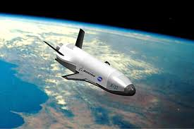

Time dilation is a prediction of Einstein’s relativity: clocks move differently depending on speed and gravity.
Clocks moving fast or in strong gravity tick slower. This has been experimentally verified with satellites and atomic clocks.
2. Gravity Slows Time
Near massive objects like black holes, time flows slower. For example, 1 hour near a black hole can equal 7 years on Earth.
3. Speed Slows Time

High-speed travel causes time to slow. Astronauts on the ISS age slightly slower than people on Earth. At near-light speed, the effect is extreme.
4. GPS and Time Dilation
GPS satellites move fast and are farther from Earth’s gravity, causing their clocks to tick differently. Engineers adjust clocks so GPS works accurately.
5. Fascinating Time Dilation Facts
Astronauts age milliseconds less on Earth.
Time almost stops near a black hole.
Traveling at 99% the speed of light for 5 years = thousands of years on Earth.
Measured with atomic clocks.
Your feet age slower than your head due to gravity differences!